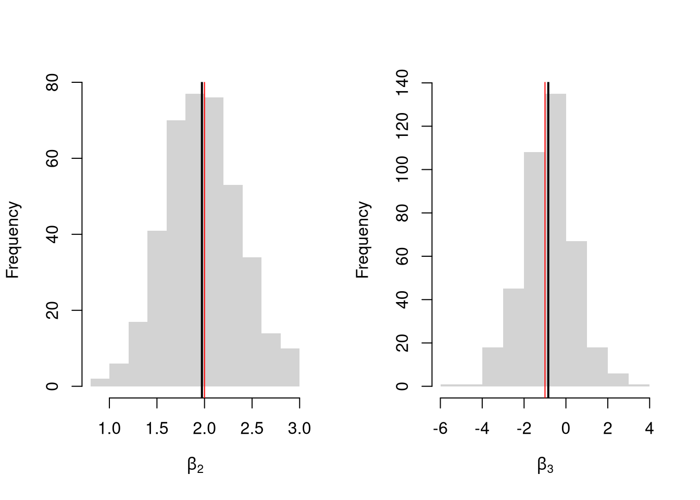
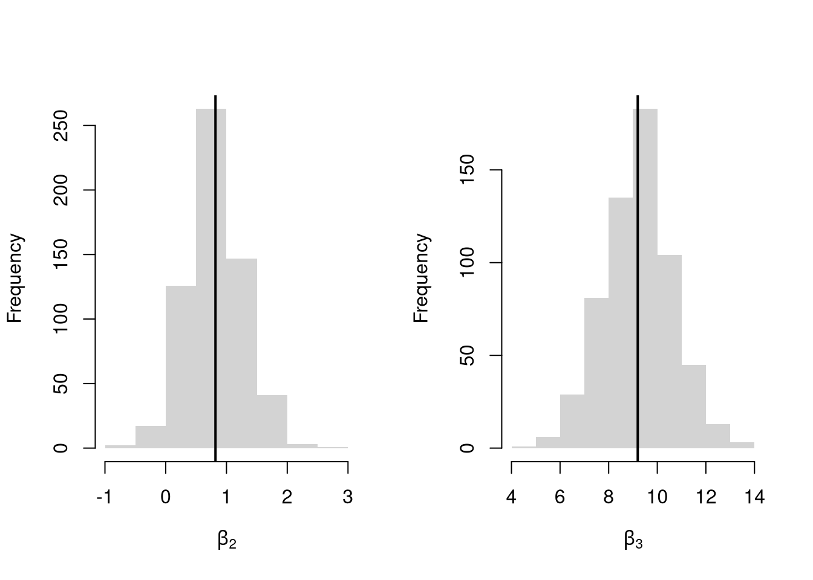

Notice that we have gotten pretty far without actually trying to meaningfully interpret regression coefficients. That is because the above procedure will always give us number, regardless as to whether the true data generating process is linear or not. So, to be cautious, we have been interpreting the regression outputs while being agnostic as to how the data are generated. We now consider a special situation where we know the data are generated according to a linear process and are only uncertain about the parameter values.
If the data generating process is \[
y=X\beta + \epsilon\\
\mathbb{E}[\epsilon | X]=0,
\] then we have a famous result that lets us attach a simple interpretation of OLS coefficients as unbiased estimates of the effect of X: \[
\hat{\beta} = (X'X)^{-1}X'y = (X'X)^{-1}X'(X\beta + \epsilon) = \beta + (X'X)^{-1}X'\epsilon\\
\mathbb{E}\left[ \hat{\beta} \right] = \mathbb{E}\left[ (X'X)^{-1}X'y \right] = \beta + (X'X)^{-1}\mathbb{E}\left[ X'\epsilon \right] = \beta
\]
Generate a simulated dataset with 30 observations and two exogenous variables. Assume the following relationship: \(y_{i} = \beta_0 + \beta_1 x_{i1} + \beta_2 x_{i2} + \epsilon_i\) where the variables and the error term are realizations of the following data generating processes (DGP):
Simulate the distribution of coefficients under a correctly specified model. Interpret the average.
Code
N <-30B <-c(10, 2, -1)Coefs <-sapply(1:400, function(sim){ x1 <-runif(N, 0, 5) x2 <-rbinom(N,1,.7) X <-cbind(1,x1,x2) e <-rnorm(N,0,3) Y <- X%*%B + e dat <-data.frame(Y,x1,x2)coef(lm(Y~x1+x2, data=dat))})par(mfrow=c(1,2))for(i in2:3){hist(Coefs[i,], xlab=bquote(beta[.(i)]), main='', border=NA)abline(v=mean(Coefs[i,]), lwd=2)abline(v=B[i], col=rgb(1,0,0))}

Many economic phenomena are nonlinear, even when including potential transforms of \(Y\) and \(X\). Sometimes the linear model may still be a good or even great approximation. But sometimes not, and it is hard to know ex-ante. Examine the distribution of coefficients under this mispecified model and try to interpret the average.
Code
N <-30Coefs <-sapply(1:600, function(sim){ x2 <-runif(N, 0, 5) x3 <-rbinom(N,1,.7) e <-rnorm(N,0,3) Y <-10*x3 +2*log(x2)^x3 + e dat <-data.frame(Y,x2,x3)coef(lm(Y~x2+x3, data=dat))})par(mfrow=c(1,2))for(i in2:3){hist(Coefs[i,], xlab=bquote(beta[.(i)]), main='', border=NA)abline(v=mean(Coefs[i,]), col=1, lwd=2)}

In general, you can interpret your regression coefficients as “adjusted correlations”. There are (many) tests for whether the relationships in your dataset are actually additively separable and linear.
16.2 Diagnostics
There’s little sense in getting great standard errors for a terrible model. Plotting your regression object a simple and easy step to help diagnose whether your model is in some way bad. We next go through what each of these figures show.
The first diagnostic plot examines outliers in terms the outcome \(y_i\) being far from its prediction \(\hat{y}_i\). You may be interested in such outliers because they can (but do not have to) unduly influence your estimates.
The third diagnostic plot examines another type of outlier, where an observation with the explanatory variable \(x_i\) is far from the center of mass of the other \(x\)’s. A point has high leverage if the estimates change dramatically when you estimate the model without that data point.
Standardized residuals are \[
r_i=\frac{\hat{\epsilon}_i}{s_{[i]}\sqrt{1-h_i}},
\] where \(s_{[i]}\) is the root mean squared error of a regression with the \(i\)th observation removed and \(h_i\) is the leverage of residual \(\hat{\epsilon_i}\).
(See https://www.r-bloggers.com/2016/06/leverage-and-influence-in-a-nutshell/ for a good interactive explanation, and https://online.stat.psu.edu/stat462/node/87/ for detail.)
The fourth plot further assesses outlier \(X\) using Cook’s Distance, which sums of all prediction changes when observation \(i\) is removed and scales proportionally to the mean square error $s^2 = . \[\begin{eqnarray}
D_{i}
= \frac{\sum_{j} \left( \hat{y_j} - \hat{y_j}_{[i]} \right)^2 }{ p s^2 }
= \frac{[e_{i}]^2}{p s^2 } \frac{h_i}{(1-h_i)^2}
\end{eqnarray}\]
This is when one explanatory variable in a multiple linear regression model can be linearly predicted from the others with a substantial degree of accuracy. Coefficient estimates may change erratically in response to small changes in the model or the data. (In the extreme case where there are more variables than observations \(K>N\), the inverse of \(X'X\) has an infinite number of solutions.) To diagnose collinearity, we can use the Variance Inflation Factor\[
VIF_{k}=\frac{1}{1-R^2_k},
\] where \(R^2_k\) is the \(R^2\) for the regression of \(X_k\) on the other covariates \(X_{-k}\) (a regression that does not involve the response variable Y)
Code
car::vif(reg) sqrt(car::vif(reg)) >2# problem?
Normality.
The second plot examines whether the residuals are normally distributed. Your OLS coefficient estimates do not depend on the normality of the residuals. (Good thing, because there’s no reason the residuals of economic phenomena should be so well behaved.) Many hypothesis tests are, however, affected by the distribution of the residuals. For these reasons, you may be interested in assessing normality
Code
par(mfrow=c(1,2))hist(resid(reg), main='Histogram of Residuals',font.main=1, border=NA)qqnorm(resid(reg), main="Normal Q-Q Plot of Residuals",font.main=1, col=grey(0,.5), pch=16)qqline(resid(reg), col=1, lty=2)#shapiro.test(resid(reg))
Heterskedasticity may also matters for variability estimates. This is not shown in the plot, but you can conduct a simple test
Code
library(lmtest)lmtest::bptest(reg)
16.3 Transformations
Transforming variables can often improve your model fit while still allowing it estimated via OLS. This is because OLS only requires the model to be linear in the parameters. Under the assumptions of the model is correctly specified, the following table is how we can interpret the coefficients of the transformed data. (Note for small changes, \(\Delta ln(x) \approx \Delta x / x = \Delta x \% \cdot 100\).)
Specification
Regressand
Regressor
Derivative
Interpretation (If True)
linear–linear
\(y\)
\(x\)
\(\Delta y = \beta_1\cdot\Delta x\)
Change \(x\) by one unit \(\rightarrow\) change \(y\) by \(\beta_1\) units.
log–linear
\(ln(y)\)
\(x\)
\(\Delta y \% \cdot 100 \approx \beta_1 \cdot \Delta x\)
Change \(x\) by one unit \(\rightarrow\) change \(y\) by \(100 \cdot \beta_1\) percent.
linear–log
\(y\)
\(ln(x)\)
\(\Delta y \approx \frac{\beta_1}{100}\cdot \Delta x \%\)
Change \(x\) by one percent \(\rightarrow\) change \(y\) by \(\frac{\beta_1}{100}\) units
log–log
\(ln(y)\)
\(ln(x)\)
\(\Delta y \% \approx \beta_1\cdot \Delta x \%\)
Change \(x\) by one percent \(\rightarrow\) change \(y\) by \(\beta_1\) percent
Now recall from micro theory that an additively seperable and linear production function is referred to as ``perfect substitutes’‘. With a linear model and untranformed data, you have implicitly modelled the different regressors \(X\) as perfect substitutes. Further recall that the’‘perfect substitutes’’ model is a special case of the constant elasticity of substitution production function. Here, we will build on http://dx.doi.org/10.2139/ssrn.3917397, and consider box-cox transforming both \(X\) and \(y\). Specifically, apply the box-cox transform of \(y\) using parameter \(\lambda\) and apply another box-cox transform to each \(x\) using the same parameter \(\rho\) so that \[\begin{eqnarray}
y^{(\lambda)}_{i} &=& \sum_{k=1}^{K}\beta_{k} x^{(\rho)}_{ik} + \epsilon_{i}\\
y^{(\lambda)}_{i} &=&
\begin{cases}
\lambda^{-1}[ (y_i+1)^{\lambda}- 1] & \lambda \neq 0 \\
log(y_i+1) & \lambda=0
\end{cases}.\\
x^{(\rho)}_{i} =
\begin{cases}
\rho^{-1}[ (x_i)^{\rho}- 1] & \rho \neq 0 \\
log(x_{i}+1) & \rho=0
\end{cases}.
\end{eqnarray}\]
Notice that this nests:
linear-linear \((\rho=\lambda=1)\).
linear-log \((\rho=1, \lambda=0)\).
log-linear \((\rho=0, \lambda=1)\).
log-log \((\rho=\lambda=0)\).
If \(\rho=\lambda\), we get the CES production function. This nests the ‘’perfect substitutes’’ linear-linear model (\(\rho=\lambda=1\)) , the ‘’cobb-douglas’’ log-log model (\(\rho=\lambda=0\)), and many others. We can define \(\lambda=\rho/\lambda'\) to be clear that this is indeed a CES-type transformation where
\(\rho \in (-\infty,1]\) controls the “substitutability” of explanatory variables. E.g., \(\rho <0\) is ‘’complementary’’.
\(\lambda\) determines ‘’returns to scale’‘. E.g., \(\lambda<1\) is’‘decreasing returns’’.
We compute the mean squared error in the original scale by inverting the predictions; \[
\widehat{y}_{i} =
\begin{cases}
[ \widehat{y}_{i}^{(\lambda)} \cdot \lambda ]^{1/\lambda} -1 & \lambda \neq 0 \\
exp( \widehat{y}_{i}^{(\lambda)}) -1 & \lambda=0
\end{cases}.
\]
It is easiest to optimize parameters in a 2-step procedure called `concentrated optimization’. We first solve for \(\widehat{\beta}(\rho,\lambda)\) and compute the mean squared error \(MSE(\rho,\lambda)\). We then find the \((\rho,\lambda)\) which minimizes \(MSE\).
The parameters \(-1,0,1,2\) are easy to interpret and might be selected instead if there is only a small loss in fit. (In the above example, we might choose \(\lambda=0\) instead of the \(\lambda\) which minimized the mean square error). You can also plot the specific predictions to better understand the effect of data transformation beyond mean squared error.
When explicitly transforming data according to \(\lambda\) and \(\rho\), these parameters increase the degrees of freedom by two. The default hypothesis testing procedures do not account for you trying out different transformations, and should be adjusted by the increased degrees of freedom. Specification searches deflate standard errors and are a major source for false discoveries.
Note that if you are ultimately interested in the outcome \(Y\), then transforming/untransforming \(Y\) can introduce a bias. To understand when you might be better off sticking with an untransformed outcome variable, see the literature on “smearing”.
Break Points.
Incorporating Kinks and Discontinuities in \(X\) are a type of transformation that can be modeled using factor variables. As such, \(F\)-tests can be used to examine whether a breaks is statistically significant.
Code
library(AER); data(CASchools)CASchools$score <- (CASchools$read + CASchools$math) /2reg <-lm(score~income, data=CASchools)# F Test for Breakreg2 <-lm(score ~ income*I(income>15), data=CASchools)anova(reg, reg2)# Chow Test for Breakdata_splits <-split(CASchools, CASchools$income <=15)resids <-sapply(data_splits, function(dat){ reg <-lm(score ~ income, data=dat)sum( resid(reg)^2)})Ns <-sapply(data_splits, function(dat){ nrow(dat)})Rt <- (sum(resid(reg)^2) -sum(resids))/sum(resids)Rb <- (sum(Ns)-2*reg$rank)/reg$rankFt <- Rt*Rbpf(Ft,reg$rank, sum(Ns)-2*reg$rank,lower.tail=F)# See also# strucchange::sctest(y~x, data=xy, type="Chow", point=.5)# strucchange::Fstats(y~x, data=xy)# To Find Changes# segmented::segmented(reg)
16.4 Regressograms
You can estimate a nonparametric model with multiple \(X\) variables with a multivariate regressogram. Here, we cut the data into exclusive bins along each dimension (called dummy variables), and then run a regression on all dummy variables.
################### Multivariate Regressogram#################### Regressogram Binsdat$x1c <-cut(dat$x1, bks1)#head(dat$x1c,3)dat$x2c <-cut(dat$x2, bks2)## Regressogramreg <-lm(y~x1c*x2c, data=dat) #nonlinear w/ complex interactions## Predicted Values## For Points in Middle of Each Binpred_df_rgrm <-expand.grid(x1c=levels(dat$x1c),x2c=levels(dat$x2c))pred_df_rgrm$yhat <-predict(reg, newdata=pred_df_rgrm)pred_df_rgrm <-cbind(pred_df_rgrm, pred_x)## Plot Predictionspar(oma=c(0,0,0,2))plot(x1~x2, pred_df_rgrm,col=ycol_pal[cut(pred_df_rgrm$yhat,col_scale)],pch=15, cex=2, main='Regressogram Predictions')add_legend(x='topright', col_scale=col_scale,yl=6, inset=c(0,.05),title='y')
Just like with bivariate data, you can also use split-sample (or peicewise) regressions for multivariate data.
As such, there are two main ways to summarize gradients: how \(Y\) changes with \(X\).
For regressograms, you can approximate gradients with small finite differences. For some small \(h_{p}\), we can manually compute \[\begin{eqnarray}
\widehat{\beta_{p}}(\mathbf{x}) &=& \frac{ \widehat{Y}(x_{1},...,x_{p}+h_{p}...,x_{P})-\widehat{Y}(x_{1},...,x_{p}-h_{p}...,x_{P})}{2h_{p}},
\end{eqnarray}\]
When using split-sample regressions, you can get all estimated coefficients that provides gradient estimates in each direction. \[\begin{eqnarray}
\widehat{\beta}(\mathbf{x}) &=& [\mathbf{X}'\mathbf{K}(\mathbf{x})\mathbf{X}]^{-1} \mathbf{X}'\mathbf{K}(\mathbf{x})Y \\
\mathbf{K}(\mathbf{x}) &=& \begin{pmatrix}
K\left(\frac{\mathbf{X}_{1}-\mathbf{x}}{h}\right) & ... & 0\\
\vdots & & \\
0 & ... & K\left(\frac{\mathbf{X}_{P}-\mathbf{x}}{h}\right)
\end{pmatrix},
\end{eqnarray}\]
After computing gradients, you can summarize them in various plots
Histograms, Scatterplots
Plot of gradients and CI’s,
You may also be interested in a particular gradient or a single summary statistic. For example, a bivariate regressogram can estimate the marginal effect of \(X_{1}\) at the means; \(\widehat{\beta_{1}}(\overline{\mathbf{x}}=[\overline{x_{1}}, \overline{x_{2}}])\). You may also be interested in the mean of the marginal effects (sometimes said simply as “average effect”), which averages the marginal effect over all datapoints in the dataset: \(1/N \sum_{i}^{N} \widehat{\beta_{1}}(\mathbf{X}_{i})\), or the median marginal effect. Such statistics are single numbers that can be presented similar to an OLS regression table where each row corresponds a variable and each cell has two elements: “mean gradient (sd gradient)”.
Belsley, D. A., Kuh, E., and Welsch, R. E. (1980). Regression Diagnostics: Identifying influential data and sources of collinearity. Wiley. https://doi.org/10.1002/0471725153
Fox, J. D. (2020). Regression diagnostics: An introduction (2nd ed.). SAGE. https://dx.doi.org/10.4135/9781071878651